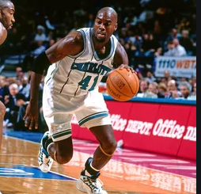
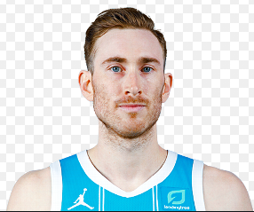

Hornets

The Charlotte Hornets are an American professional basketball team based in Charlotte, North Carolina. The Hornets compete in the National Basketball Association (NBA), as a member of the league's Eastern Conference Southeast Division. The team is mainly owned by Hall-of-Fame member Michael Jordan, who acquired a controlling interest in the team in 2010.The Hornets play their home games at the Spectrum Center in Uptown Charlotte.
The original Hornets franchise was established in 1988 as an expansion team, owned by George Shinn. After the conclusion of the 2001–02 NBA season, Shinn's franchise relocated to New Orleans and became the New Orleans Hornets. In 2004, the NBA established the Charlotte Bobcats, which was regarded as a new expansion team at the time. In 2013, the New Orleans franchise announced it would rebrand itself the New Orleans Pelicans, ultimately returning the Hornets name, records, and official history (spanning from 1988 to 2002) to Charlotte. The Bobcats were officially renamed the Hornets by the 2014–15 season.
Glen Anthony Rice Sr. (born May 28, 1967) is an American retired professional basketball player who played in the National Basketball Association (NBA). As a small forward, Rice was a three-time NBA All-Star, and made 1,559 three-point field goals during his 15-year career. Rice won both an NCAA championship and NBA championship during his collegiate and professional career. In recent years, Rice has taken up MMA fight promotion as owner of G-Force Fights based in Miami, Florida.
Days before the start of the 1995–96 season, newly hired Coach/GM Pat Riley organized a trade in which Rice was sent to the Charlotte Hornets along with Matt Geiger in exchange for disgruntled Hornets center Alonzo Mourning who had refused any contract negotiations. The Hornets paired Rice with high scoring forward Larry Johnson, and the two led the team to 41 wins. Rice led the team in scoring with 21.6 points a game and led his team in three-point field goals (171) and three-point shooting percentage (42%). He was also named to play in the 1996 NBA All-Star Game, but the Hornets failed to make the playoffs. It would be the 1996–97 season in which Rice would earn the distinction of an elite player in the league. The Hornets had acquired veteran players Vlade Divac and Anthony Mason and no longer featured Johnson, and also hiring a new head coach and NBA legend Dave Cowens. Rice averaged 26.8 points a game during the season, placing him third in the league in scoring while leading the league in three-point shooting (47%) and minutes played. His play earned him his second straight All-Star game election, and at the 1997 NBA All-Star Game set an individual All-Star game records of 20 points in the third quarter and 24 points in the second half to finish with 26 points for the game. His 8–11 shooting performance including 4–5 three-pointer shooting and his 20 points in the third quarter broke Philadelphia guard Hal Greer's record (19), set in 1968. By scoring 24 in a half, Rice surpassed the previous mark of 23, owned by Wilt Chamberlain and Tom Chambers.Rice's performance is listed on the NBA's 57 Memorable All-Star Moments.His performance helped the Eastern Conference win the game, and earned him the NBA All-Star Game Most Valuable Player Award. The Hornets won 54 games, and made it into the 1997 Playoffs where they were swept 3–0 by the New York Knicks in the first round. Rice would average 22.3 points a game (8th in the league) during the 1997–98 season, finishing second in the league in minutes played and scoring 16 points in the 1998 NBA All-Star Game. The Hornets won 51 games, and in the first round of the 1998 Playoffs, they managed to win a playoff series, defeating the Atlanta Hawks before losing to the defending champion Chicago Bulls in the second round. The 1998–99 season would start late and last only 50 games due to a league lockout, and on March 10, 1999, the Hornets traded Rice to the Los Angeles Lakers.
Gordon Daniel Hayward (born March 23, 1990) is an American professional basketball player for the Charlotte Hornets of the National Basketball Association (NBA). He played two seasons of college basketball for the Butler Bulldogs and was selected by the Utah Jazz with the ninth overall pick of the 2010 NBA draft. He played seven seasons in Utah before signing with the Boston Celtics in 2017. In college, Hayward led Butler to the championship game of the 2010 NCAA Tournament. In 2017, Hayward was selected an NBA All-Star for the first time.On November 29, 2020, Hayward was signed by the Boston Celtics to a four-year $120 million deal and then traded to the Charlotte Hornets, along with 2023 and 2024 second-round draft picks, in exchange for a conditional 2022 second-round draft pick.The trade also allowed the Boston Celtics to create a traded-player exception worth the value of the first year of Hayward’s four-year, $120 million dollar deal, that is $28.5 million, making it the biggest traded-player exception created in the history of the NBA.On December 23, 2020, Hayward made his Hornets debut, putting up 28 points, seven assists, and four rebounds in a 121–114 loss to the Cleveland Cavaliers.On January 6, 2021, Hayward set a new career high of 44 points in a 102–94 win over the Atlanta Hawks.